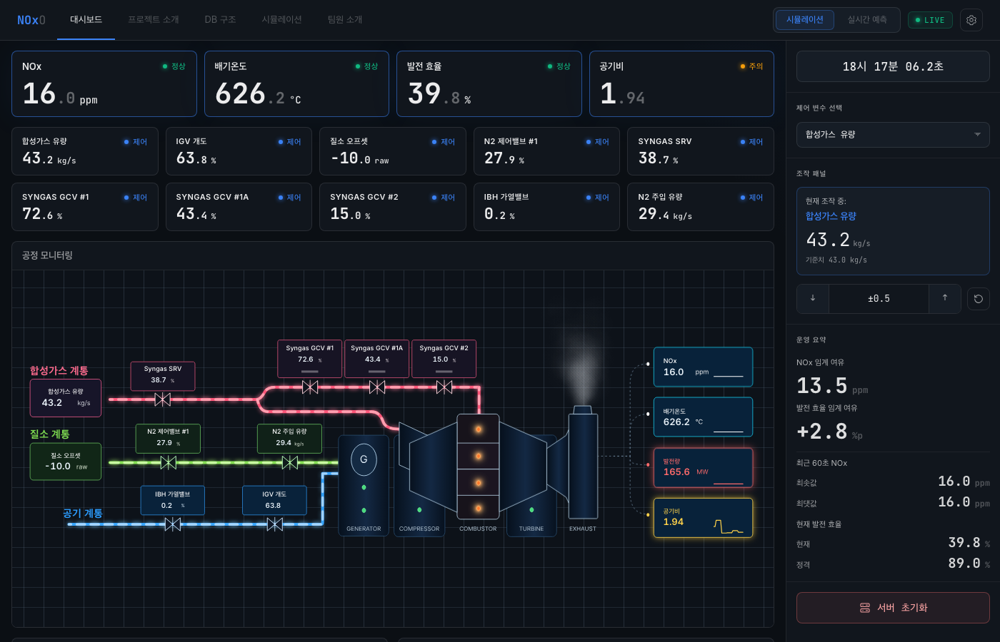
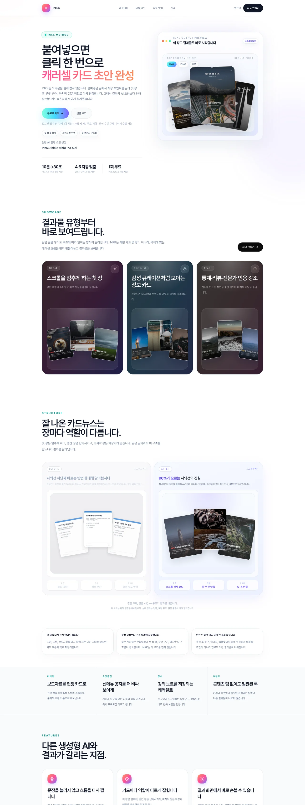
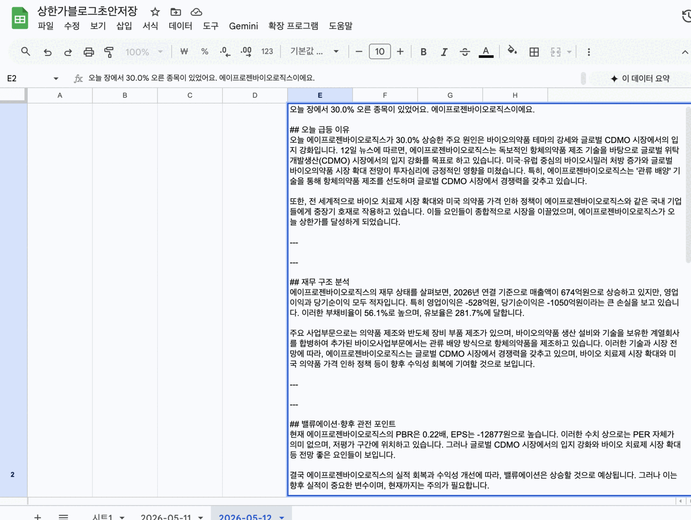

01 · 소개
일하는 방식을 바꿉니다.
LLM과 에이전트로 기업의 반복 업무를 자동화합니다. 지표만 좋은 모델이 아니라, 실제로 일이 바뀌는 시스템을 만듭니다.
문제 정의 → 구조 설계 → 프로토타입 → 검증·운영까지 한 사이클로 끌고 갑니다. 아이디어가 떠오르면 코딩 에이전트로 곧장 프로토타입에 옮기고, 가설을 바꿔가며 빠르게 시도합니다.
02 · 이력
걸어온 길.
경력
2023.01
— 2024.11
— 2024.11
CCC아가페실버센터
운영지원팀 사원 · 사회복지사
입소자 관리, 보고 문서, 정기 안전 점검·비상대응 훈련까지 사회복지 행정 전반을 담당했습니다.
단기 경험
2025.08
— 2025.10
— 2025.10
티아이지
기록물 관리 · 아르바이트
기록물 전산 입력·문서 분류·보관 재배치, 행정 기록 아카이빙을 담당했습니다.
2025.04
— 2025.07
— 2025.07
서울강남시니어클럽
사업단 행정 지원 · 인턴
사업단 행정업무(문서·전산·공문)와 노인 일자리 사업처 발굴을 지원했습니다.
교육
2025.12
— 2026.06
— 2026.06
청년취업사관학교 새싹 (SeSAC)
제조 AI 특화 과정 · 수료
시계열·센서 데이터 분석, 컴퓨터비전, 공정 최적화·수요 예측, 생성형 AI 응용 프로젝트를 수행했습니다.
2021.11
— 2022.04
— 2022.04
스마트인재개발원
K-Digital Training · 빅데이터 분석 서비스 개발자 과정 (NCS)
빅데이터 분석·처리·시각화 전반과 머신러닝·딥러닝 기초를 학습했습니다.
학력
2014.03
— 2020.02
— 2020.02
전남대학교
생활복지학과 · 4년제 · 졸업
수상 · 자격 · 어학
2026.05
스마트 창고 출고 지연 예측 AI 경진대회 · DACON
Private 11위 / 607팀
Top 2%
2026.05
JANN — 향미 데이터 레시피 추천 앱
컴퓨터프로그램 저작권 등록
자격
ADsPSQLD리눅스마스터 2급정보처리기사(필기)1종 대형
2024.12
OPIc Intermediate Mid 2
영어 · PASS
03 · 기술
기술 스택.
AI · 에이전트
ClaudeOpenAILangGraphRAGMCP
데이터 · ML
Pythonpandasscikit-learnLightGBMSQL
프로덕트
TypeScriptNext.jsSwiftCoreMLSupabase
작업 환경
Claude CodeCursorGit
04 · 프로젝트
만든 것들.

{kind=link}

{kind=link}

{kind=link}
- 2026.03 LHV 제철 열풍로 발열량 5분 시계열 예측. 피처 12회 재구성 + SHAP 해석으로 RMSE 11.99. Python · Ridge · XGBoost · SHAP · 시계열
- 2024 Skinpass 제철 공정 이상 탐지 (Anomaly Detection). 불균형 데이터 핸들링 + SMOTE 실험. Python · LightGBM · SMOTE · 불균형 학습
- 2023 Quant ML 암호화폐 USDT 페어 시계열 신호 탐지 실험. ML 앙상블 + 백테스트·리스크 관리 파이프라인. Python · XGBoost · LightGBM · 시계열 · 백테스트
05 · 연락